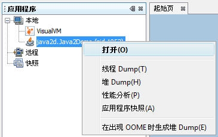
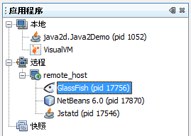

VisualVM 提供在 Java 虚拟机 (Java Virutal Machine, JVM) 上运行的 Java 应用程序的详细信息。在 VisualVM 的图形用户界面中，您可以方便、快捷地查看多个 Java 应用程序的相关信息。
本入门指南应当对您快速设置并运行 VisualVM 有所帮助。本指南将演示如何安装 VisualVM，以及如何通过安装 VisualVM 更新中心提供的插件向该工具添加功能。本指南还将介绍如何启动 VisualVM，以及如何查看可以获取的一些有关本地和远程 JVM 上运行的应用程序的信息。
以下简短的截屏视频显示了最初在 java.sun.com 中介绍的 VisualVM 功能：
在启动应用程序后，将打开 VisualVM 的主窗口。缺省情况下，“应用程序”窗口显示在主窗口的左窗格中。在“应用程序”窗口中，可以快速查看本地和远程 JVM 上运行的 Java 应用程序。
“应用程序”窗口是查看特定应用程序详细信息的主入口点。右键单击应用程序节点将打开弹出式菜单，从该弹出式菜单中可以选择是打开主应用程序标签，还是生成线程 dump 或堆 dump。
有关如何使用“应用程序”窗口查看和保存应用程序相关数据的更多详细信息，请参见以下页面：
VisualVM 有一个可视化窗口，通过该窗口可以轻松浏览堆 dump。您可以装入现有堆 dump，或为本地运行的应用程序生成堆快照。
要生成本地应用程序的堆 dump，可以执行下列任一操作：
要打开保存的堆 dump，请从主菜单中选择“文件”>“装入”，然后找到保存的堆 dump。
浏览打开的堆 dump：
在生成堆 dump 后，VisualVM 将在新标签中打开该堆 dump，并在“应用程序”窗口中的应用程序节点下为该堆 dump 创建一个节点。要保存生成的堆 dump，请右键单击该堆 dump 节点，然后选择“另存为”。如果没有明确保存生成的堆 dump，则在应用程序关闭时将删除该 dump。
有关更多信息，请参见以下文档：
VisualVM 包括一个 Profiler，可以使用它对本地 JVM 上运行的应用程序进行性能分析。您可以在应用程序标签的 "Profiler" 标签中访问性能分析控件。通过该 Profiler，可以分析本地应用程序的内存使用情况和 CPU 性能。
注意：要对 JDK 6 上运行的应用程序进行性能分析，需要关闭该应用程序的类共享，否则该应用程序可能会崩溃。要关闭类共享，请使用 -Xshare:off 参数启动应用程序。
在选择性能分析任务后，VisualVM 将在 "Profiler" 标签中显示性能分析数据。
有关使用 VisualVM 进行性能分析的更多信息，请参见以下文档：
通过 VisualVM，可以轻松监视远程主机上运行的应用程序，并查看有关远程系统的常规数据。要查看远程主机上应用程序的相关信息，必须首先连接到远程主机。已连接的远程主机将列在“应用程序”窗口的“远程”节点下。展开远程主机节点可查看远程主机上运行的应用程序。
要从远程应用程序中检索数据，需要在远程 JVM 上运行 jstatd 实用程序。有关如何启动 jstatd 的更多信息 请参见 jstatd - Virtual Machine jstat Daemon（jstatd - 虚拟机 jstat 守护进程）。无法对远程主机上运行的应用程序进行性能分析。
单击“确定”后，将在“远程”节点下显示远程主机的节点。展开远程主机节点可查看远程主机上运行的 Java 应用程序。
您可以双击远程应用程序的名称，在 VisualVM 中打开该应用程序标签。
有关更多信息，请参见以下文档：
通过安装 VisualVM 更新中心提供的插件，可以向 VisualVM 添加功能。例如，安装 VisualVM-MBeans 插件可以向应用程序标签中添加 "MBeans" 标签，通过此标签，可以在 VisualVM 内监视和管理 MBeans。
安装 VisualVM 插件：
该屏幕快照显示了选中 VisualVM-MBeans 插件的“插件”管理器。
本文档介绍了 VisualVM 的某些功能。VisualVM 旨在提供一个直观的可视界面，使您可以轻松浏览有关本地和远程 JVM 上运行的 Java 应用程序的信息。有关使用 VisualVM 功能的更多详细信息，请参见以下文档：